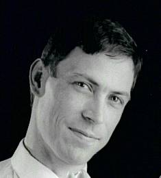

(mcconnell at apache dot org)
Background
Long experience in the area of open-source software. Member of the management team for the Apache Directory Project (LDAP), initiator and founding Member of the Apache Avalon PMC (components and containers), Lead architect of the Merlin component management platform. Expert in component based development, service oriented architecture, and reuse strategies leveraging component composition.
Chaired the Object Management Group Electronic Commerce Domain Task Force from 1996 through to 1999, during which time I facilitated the establishment of a common reference architecture and technology adoption process covering B2B community collaboration standards (receiving an OMG Distinguished Service Award in 2000). Over the last six years, I've been responsible for the coordination of a number of collaborative research and development activities related to the delivery of a distributed service management platform (OSM, France) and the osm.planet global service management architecture.
International experience in business development across the United States, Europe and Japan. I've been responsible for ground breaking technology developments within the Australian, North American and European IT industry. I've successfully managed the delivery of commercial products in the Computer Aided Design industry, high-end proprietary simulation applications in the pharmaceuticals industry (Pilkington Glass, US), production systems in the ceramics industry (Caroma, Aust), and world-class innovations in simulation related to underground and open-cut mining industries (Newmont Mining, Aust). I've also led several international projects dealing with distributed service management in the B2B and financial services domain (OSM, France).
Recent Positions
| Dates | Year | Country | Organization | Position |
|---|---|---|---|---|
| 2003 | DPML | Founder | ||
| 1997-2004 | 7 | France | OSM | Chief Technology Officer |
| 1992-1996 | 6 | France | ARTTIC | Senior Consultant |
| 1984-1991 | 8 | Australia | Finite Development | Executive Officer |